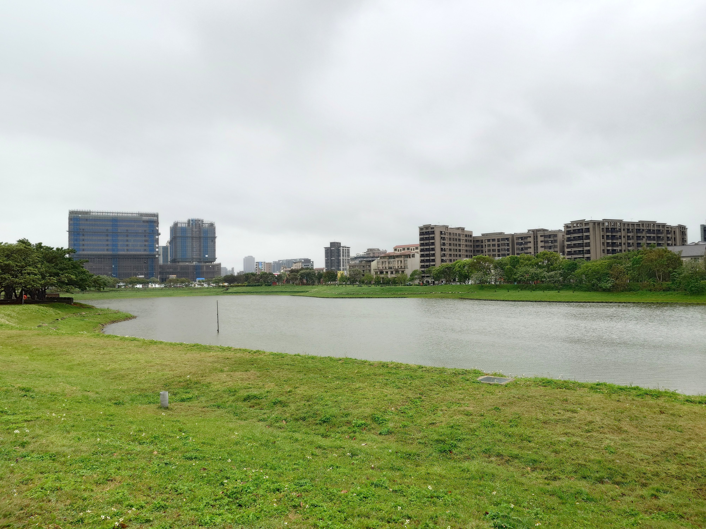

因為我本身是桃園人，在生活中經常接觸到埤塘這種特殊的水域環境。 在觀察下厝埤的過程中，我發現它不只是普通水池，而是具有歷史、地景與生態價值的重要空間。
下厝埤位於桃園青埔地區，是桃園台地重要埤塘之一。
1. 了解下厝埤 2. 分析水利系統 3. 探討生態 4. 觀察變遷 5. 建立保育觀念

本網站透過歷史、地景、生態與變遷等面向， 完整呈現下厝埤的自然與人文價值。
網站創作者：劉沛穎、廖晴儀
📍 本作品為學校專題用途